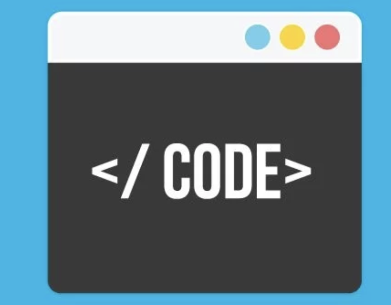

NYU Introduction to Python
Thursday, Feb 22th
Agenda
- Some Odds and Ends
- Learning How to Code in 2018
- A Note On Outside Resources
- Review of Functions
- Acitivities
Learning How to Code in 2018

Diagramming a Function
Write a fucntion of your choosing and diagram it.
Rewrite Your Twitter Homework Using Functions
If your homework doesn't use functions. Make sure you rewrite so it does.
Peanut Butter Jelly Time
This excerise was adopted from one my favorite programs I ever wrote.
Homework 2
Homework 2 is due on Monday!